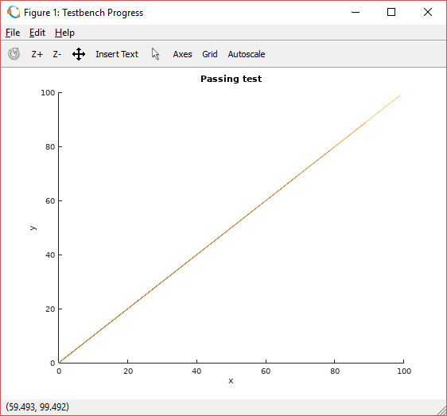

VUnit Matlab Integration¶
Note
This article was originally posted on LinkedIn where you may find some comments on its contents.
Recently I got a question from an ASIC team if it is possible to integrate their VUnit simulations with Matlab. I’ve been getting this question several times lately so this post will show you how it can be done. It will be based on their use case but hopefully it will serve as inspiration if you have other Matlab use cases or want to integrate VUnit with some other program.
The Testbench¶
The ASIC team had a slow high-level testbench that they wanted to monitor by continuously visualizing the progress of the implemented algorithm in the form of a Matlab plot. To emulate that slow test I created a testbench which doesn’t have a DUT implementing an algorithm but simply generates a sequence of output samples itself. The output samples are generated by repeatedly calling a function get_output_sample that I made really slow by adding an internal delay loop. The samples generated form a simple ramp function as shown in the figure below.

Here is the main loop of my VUnit testbench.
test_runner: process is
variable data_set : integer_array_t;
begin
test_runner_setup(runner, runner_cfg);
for set in 1 to num_of_data_sets loop
data_set := new_1d;
for data in 1 to size_of_data_set loop
append(data_set, get_output_sample);
end loop;
save_csv(data_set, join(output_path(runner_cfg), "data_set_" & to_string(set) & ".csv"));
deallocate(data_set);
end loop;
test_runner_cleanup(runner);
end process;
The code consists of two nested loops. The inner loop creates a data_set with a number of output samples and the outer loop creates several such sets. The samples in a data set is the latest progress of my algorithm, the “progress report” I send to Matlab.
data_set is declared as an integer_array_t from VUnit’s integer_array_pkg. This package allows you to manage one-, two- or three-dimensional arrays of integers and provides procedures for storing such arrays on file. Some of you may have seen the VUnit array_t before. integer_array_t is basically the same thing but it’s a regular type rather than a protected type. The reasons for this were discussed in my previous post.
In this case I have a one-dimensional array (a vector) created by
data_set := new_1d;
The created vecor is empty by default and grows dynamically with every new sample I append.
append(data_set, get_output_sample);
Once I have a complete data set I save that to a CSV file and then deallocate the data set such that I can repeat the procedure.
save_csv(data_set, file_name => join(output_path(runner_cfg), "data_set_" & to_string(set) & ".csv"));
deallocate(data_set);
The file name probably deserves a comment. output_path(runner_cfg) returns a test unique output directory that VUnit provides to the testbench via the ever-present runner_cfg generic. I assign a unique name to every CSV file based on the data set number, for example data_set_3.csv, and then create the full path by concatenating the directory and file names using the join function.
The Run Script¶
The run script is similar to most run scripts with a few additions
prj = VUnit.from_argv()
prj.add_array_util()
root = dirname(__file__)
lib = prj.add_library("lib")
lib.add_source_files(join(root, "test", "*.vhd"))
tb_octave = lib.entity("tb_octave")
tb_octave.add_config(name="Passing test",
generics=dict(size_of_data_set=10,
num_of_data_sets=10,
activate_bug=False),
pre_config=make_pre_config("Passing test", num_of_data_sets))
prj.main()
The VUnit array support is an add-on not compiled into vunit_lib by default. To include it you have to add
prj.add_array_util()
Next I want to create a configuration for my testbench. A VUnit configuration allows me to run my testbench with several different settings. In this example my testbench entity is called tb_octave and I get the testbench, compiled into lib, with the line
tb_octave = lib.entity("tb_octave")
Using the add_config method I can now add a configuration to the testbench which I named Passing test.
tb_octave.add_config(name="Passing test",
generics=dict(size_of_data_set=10,
num_of_data_sets=10,
activate_bug=False),
pre_config=make_pre_config(plot_title="Passing test", num_of_data_sets=10))
The configuration first sets a number of testbench generics collected in a Python dictionary (a list of key/value pairs). You’ve already seen the purpose of size_of_data_set and num_of_data_sets but I also have a generic activate_bug which I will use later to activate a bug in the get_output_sample function. I’ve also added something called a pre_config function. This is a function that VUnit calls before starting the simulation.
def pre_config(output_path):
p = run(["octave", join(root, "octave", "visualize.m"), output_path, plot_title, str(num_of_data_sets)])
return p.returncode == 0
pre_config takes a mandatory output_path argument which is the same directory we saw in the testbench before. Note that the output_path name doesn’t mean that it can’t be used for simulation input. A pre_config function can for example be used to generate and store an input data file in output_path and let the testbench read that data.
In this example I use pre_config to call Matlab (or rather Octave which is a free Matlab clone) using the Python run function. Octave is called with a Matlab M script, visualize.m, located in the <root>/octave directory. The script takes three arguments - the output path where the testbench stores the CSV files to plot, the title of the plot to be created, and the number of data sets that Octave should expect.
But where are plot_title and num_of_data_sets defined? pre_config is called by VUnit and it can only provide arguments it knows about. VUnit knows about the output_path it created but doesn’t know anything about the purpose of the pre_config function and what it needs to fulfill that purpose. I can hardcode these values but what if I want to reuse pre_config with different values? The trick is to generate the pre_config function.
def make_pre_config(plot_title, num_of_data_sets):
def pre_config(output_path):
p = run(["octave", join(root, "octave", "visualize.m"), output_path, plot_title, str(num_of_data_sets)])
return p.returncode == 0
return pre_config
The make_pre_config function has defined pre_config locally and returns that function to the caller of make_pre_config. Since figure_title and num_of_data_sets are arguments to make_pre_config they are also visible for pre_config, just like they would be for a local function in VHDL. It might seem strange that pre_config remembers the values of these arguments once the function has been returned and is used elsewhere. This is known as a closure and you can read more about it here.
The Matlab Script¶
I’m not a Matlab programmer but the reference manual helped me creating a script that seems to work. Based on the input arguments it creates a named plot and then waits for input files in the output directory. Every new file is read and appended to the plot. I also added a test to see if the plotted graph is monotonically increasing as intended. If so, the script creates an empty file named pass. If not, a file named fail is created.
% Parse arguments
arg_list = argv;
output_path = arg_list{1};
plot_title = arg_list{2};
num_of_data_sets = arg_list{3};
% Configure figure
fig = figure('Name', 'Testbench Progress');
title(plot_title)
xlabel("x")
ylabel("y")
xlim([0 100])
ylim([0 100])
hold on
% Wait on data set files and plot
data = [];
for s = 1:str2num(num_of_data_sets)
file_name = fullfile(output_path, strcat("data_set_", int2str(s), ".csv"));
while not(exist(file_name, 'file'))
pause(0.1)
end
data_set = csvread(file_name);
data = [data, data_set];
x = 0 : length(data) - 1;
plot(x, data)
end
% Verify that the data set is monotonically increasing
if sum(data(1:length(data)-1) >= data(2:length(data))) == 0
f = fopen(fullfile(output_path, "pass"), "w");
else
f = fopen(fullfile(output_path, "fail"), "w");
disp("ERROR: Output is not monotonically increasing!")
end
fclose(f);
% Quit when figure is closed
pause(1)
waitfor(fig);
The next step is to let the pass/fail files determine the faith of my testbench. This can be done with a VUnit post_check function. I works just like the pre_config function but runs after the testbench.
def post_check(output_path):
for i in range(10):
if exists(join(output_path, "pass")):
return True
elif exists(join(output_path, "fail")):
return False
sleep(1)
return False
If a pass file is found within 10 seconds the function returns True, otherwise False. A pre_config or post_check function returning False will cause my test to fail just like a failing assert within my testbench would.
Putting It All Together¶
To demonstrate both the passing and the failing case I’ve created two configurations for this testbench using a for loop. Note how make_pre_config allows me to reuse the pre_config function with different values for plot_title.
size_of_data_set = 10
num_of_data_sets = 10
for name, activate_bug in [("Passing test", False), ("Failing test", True)]:
tb_octave.add_config(name=name,
generics=dict(size_of_data_set=size_of_data_set,
num_of_data_sets=num_of_data_sets,
activate_bug=activate_bug),
pre_config=make_pre_config(plot_title=name, num_of_data_sets=num_of_data_sets),
post_check=post_check)
The result is shown in this short clip
The good thing about the solutions I provided is that it makes it is fairly easy to get started. You can download the code and adapt it for your needs. If you didn’t know about VUnit configurations and arrays you’ve also learned something that is useful in many other situations. However, leaving aside my limited Matlab skills, there are still a number of flaws with this solution. For example
With the CSV support provided by VUnit and Matlab it became easy to split the data into sets and store them in separate files. I would prefer writing and reading a single open file.
Copying and modifying code is not good reuse. I need to raise the abstraction and remove details.
Responsibility for the plot is all over the place. The testbench is in charge of the data, the title is set by the Python script, axis labels are controlled by the M script, and some properties are hardcoded.
It seems that I will have to revisit this post. Until then…